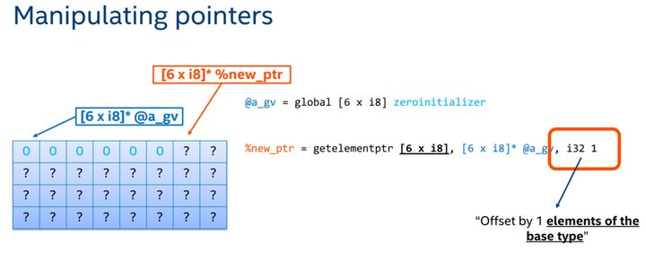
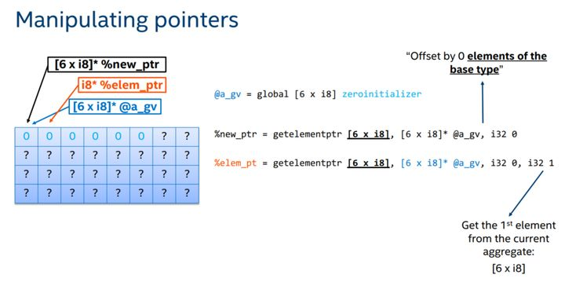

Lab 7 实验指导
理解 getElementPtr 指令
在你准备动手写这个 lab 之前，我们强烈建议你先自己写几个带有数组的程序并自己编译为 LLVM IR 看一下不同情况下 clang 是怎么做的，不然你可能会对 getElementPtr（下面简称为 GEP) 这个指令感到迷惑。如果你看完实验指导并且生成了自己的代码之后还是有疑问，可以浏览 这里。
LLVM 的指针操作 GEP 指令几乎是所有指针计算的关键。
GEP 指令的工作是“计算地址”，本身并不进行任何数据的访问和修改。GEP 指令的最基本语法为 <result> = getelementptr <ty>, <ty>* <ptrval>, {<ty> <index>}*，其中第一个 <ty> 表示第一个索引所指向的类型，第二个 <ty> 表示后面的指针基址 <ptrval> 的类型，<ty> <index> 表示一组索引的类型和值。要注意索引的类型和索引指向的基本类型是不一样的，索引的类型一般为 i32 或 i64 ，而索引指向的基本类型确定的是增加索引值时指针的偏移量。
第一个索引不会改变返回的指针的类型，也就是说 ptrval 前面的 <ty>* 对应什么类型，返回就是什么类型；第一个索引的偏移量的是由第一个索引的值和第一个 ty 指定的基本类型共同确定的。

上图中第一个索引指向的基本类型是 [6 x i8]，索引值是 1，所以 GEP 指令返回的值相对基址 @a_gv 前进了 6 个字节。由于只有一个索引，所以返回的指针也是 [6 x i8]* 类型。
而对于后面的索引，每增加一个索引，就会使得该索引使用的基本类型和返回的指针的类型去掉一层。

上图中 %elem_ptr = getelementptr [6 x i8], [6 x i8]* @a_gv, i32 0, i32 1 这一句中第一个索引值是 0，指向的类型是 [6 x i8]，因此其使返回的指针先前进 0 x 6 个字节，也就是不前进。第二个索引的值是 1，使用的基本类型就是 i8（[6 x i8] 去掉左边的 6），因此其使返回的指针前进一个字节，返回的指针类型为 i8*。
GEP 指令对于新上手的程序员来说比较难理解，所幸我们实验中涉及到指针计算的部分只有数组，而且高维数组可以用一个一维数组来模拟，比如一个 [4][5] 的二维数组，我们可以用一个 [20] 的一维数组来模拟，这就极大的减少了我们的工作量。
下面对数组 a[5][4] 中使用 GEP 指令计算 a[2][3] 的地址，给出几个使用 GEP 指令的示例：
; 1
@a = global [5 x [4 x i32]] zeroinitializer
%1 = getelementptr [5 x [4 x i32]], [5 x [4 x i32]]* @a, i32 0, i32 2, i32 3 ; %1 类型为 i32*
; 2
@a = global [5 x [4 x i32]] zeroinitializer
%1 = getelementptr [5 x [4 x i32]], [5 x [4 x i32]]* @a, i32 0, i32 2 ; %1 类型为 [4 x i32]*，可以理解为 C 语言中指向长度为 4 的一维数组基址的指针
%2 = getelementptr [4 x i32], [4 x i32]* %1, i32 0, i32 3 ; %2 类型为 i32*
; 3
@a = global [5 x [4 x i32]] zeroinitializer
%1 = getelementptr [5 x [4 x i32]], [5 x [4 x i32]]* @a, i32 0, i32 0 ; %1 类型为 [4 x i32]*
%2 = getelementptr [4 x i32], [4 x i32]* %1, i32 2, i32 3 ; %2 类型为 i32*
; 4
@a = global [20 x i32] zeroinitializer
%1 = mul i32 2, 4
%2 = add i32 %1, 3
%3 = getelementptr [20 x i32], [20 x i32]* @a, i32 0, i32 %2 ; %3 类型为 i32*
; 5
@a = global [20 x i32] zeroinitializer
%1 = getelementptr [20 x i32], [20 x i32]* @a, i32 0, i32 0 ; %1 类型为 i32*
%2 = mul i32 2, 4
%3 = getelementptr i32, i32* %1, i32 %2 ; %3 类型为 i32*
%4 = getelementptr i32, i32* %3, i32 3 ; %4 类型为 i32*